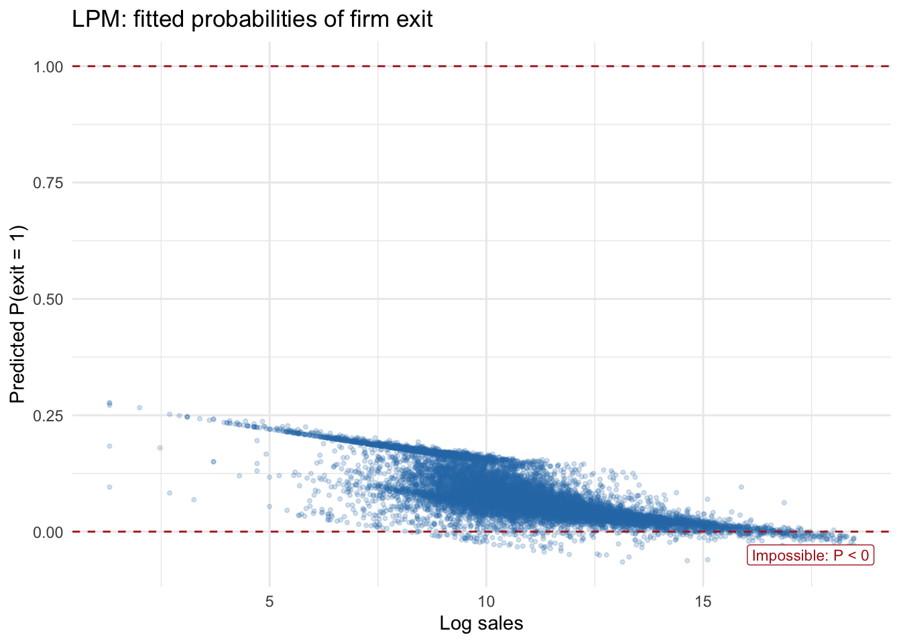
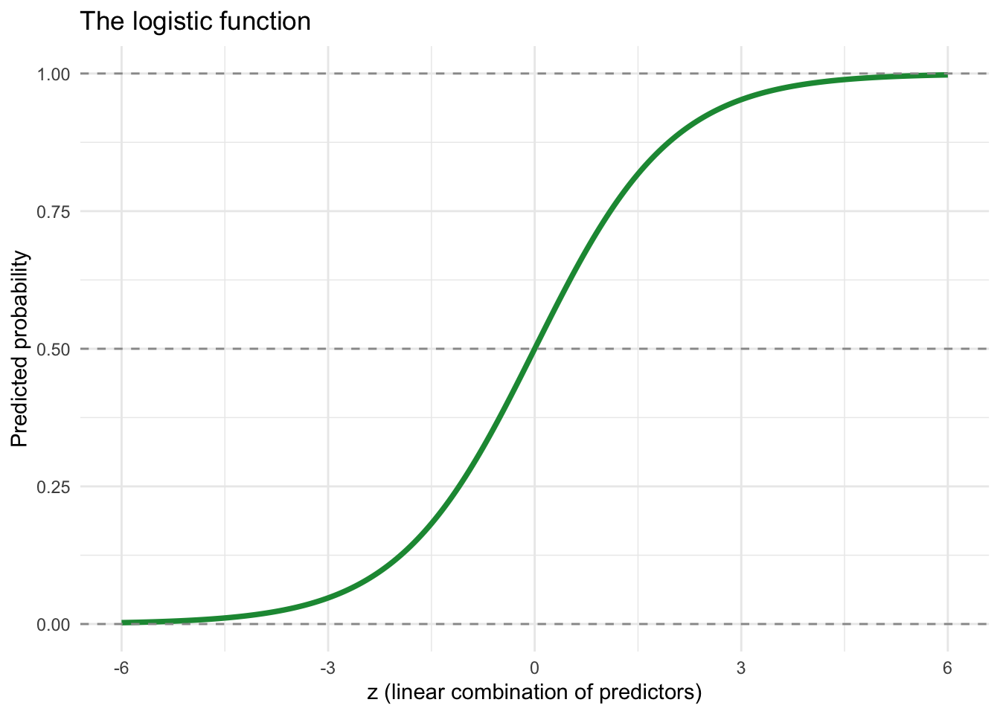
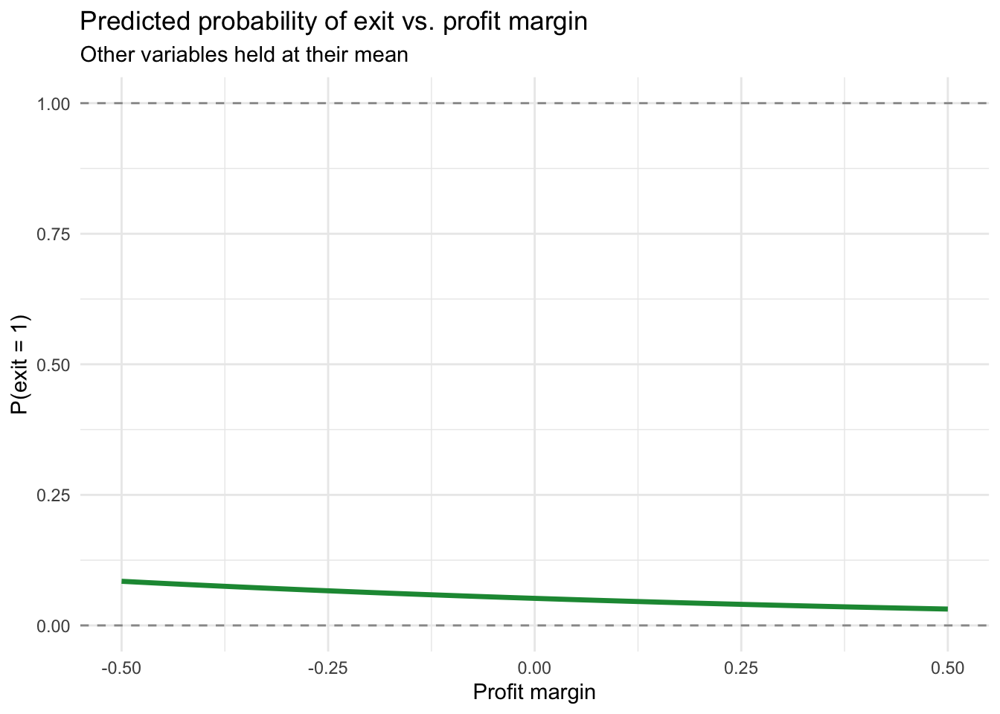

Code
library(tidyverse)
library(modelsummary)
library(marginaleffects)
library(broom)Claudius Gräbner-Radkowitsch
June 16, 2026
June 16, 2026
Many outcomes of interest in economics, political science, and business are binary — a firm either exits the market or it does not; a loan is either repaid or it defaults; a voter either turns out or abstains. The familiar linear regression model runs into fundamental problems with such outcomes: it produces predicted probabilities outside [0, 1] and generates invalid standard errors.
Logistic regression solves both problems by modelling the probability of the outcome through a transformation that keeps predictions bounded between 0 and 1. The tradeoff is a more complex interpretation: instead of reading off the effect of X on Y directly, we work with log-odds, odds ratios, and — most practically — predicted probabilities.
Can we predict which firms are likely to exit the market in the next year?
We use the bisnode-firms dataset from Békés & Kézdi (2021). It contains roughly 17,500 Hungarian manufacturing and services firms. The outcome variable exit is a binary indicator equal to 1 if the firm closed in the following year.
Download bisnode-firms.csv from gabors-data-analysis.com and place it in a data/ subfolder next to this file. The dataset is distributed with the Békés & Kézdi textbook under an open data licence.
Rows: 17,506
Columns: 11
$ comp_id <dbl> 1002029, 1011889, 1014183, 1018301, 1022796, 1035705, 10…
$ exit <dbl> 0, 0, 0, 0, 0, 0, 0, 0, 0, 0, 0, 0, 1, 0, 0, 1, 0, 0, 0,…
$ sales_log <dbl> 13.943477, 12.980031, 11.773208, 8.813174, 10.169549, 10…
$ employees_log <dbl> -0.78015860, 0.48317409, -0.33508429, -1.87877086, -2.48…
$ profit_margin <dbl> 0.008554417, 0.223101892, -0.018128871, -0.164738285, -0…
$ age <dbl> 6, 20, 11, 8, 11, 1, 14, 5, 2, 4, 2, 1, 2, 4, 16, 1, 23,…
$ liquidity <dbl> 1.69277357, 8.46944789, 24.16025018, 3.05624997, 0.90785…
$ foreign <dbl> 0, 0, 0, 0, 0, 0, 1, 0, 0, 0, 0, 0, 0, 0, 0, 1, 0, 0, 0,…
$ female_ceo <dbl> 0, 0, 0, 0, 0, 0, 0, 0, 0, 0, 0, 1, 1, 0, 0, 0, 0, 0, 1,…
$ industry <dbl> 27, 55, 55, 56, 56, 56, 29, 56, 56, 27, 41, 55, 56, 28, …
$ urban <dbl> 0, 0, 0, 0, 1, 0, 0, 0, 1, 0, 1, 1, 1, 0, 1, 0, 0, 0, 0,…How common is firm exit in this sample?
# A tibble: 2 × 3
exit n share
<dbl> <int> <dbl>
1 0 16294 0.931
2 1 1212 0.0692Exit events are relatively rare — this is typical of survival data.
The simplest approach is to regress the binary outcome on predictors with OLS. This is called the Linear Probability Model (LPM):
Call:
lm(formula = exit ~ sales_log + profit_margin + employees_log,
data = firms)
Residuals:
Min 1Q Median 3Q Max
-0.27563 -0.07935 -0.05414 -0.03527 1.04989
Coefficients:
Estimate Std. Error t value Pr(>|t|)
(Intercept) 0.216657 0.022001 9.848 < 2e-16 ***
sales_log -0.013902 0.001729 -8.041 9.45e-16 ***
profit_margin -0.087885 0.005908 -14.875 < 2e-16 ***
employees_log 0.005976 0.002556 2.338 0.0194 *
---
Signif. codes: 0 '***' 0.001 '**' 0.01 '*' 0.05 '.' 0.1 ' ' 1
Residual standard error: 0.2498 on 17502 degrees of freedom
Multiple R-squared: 0.03178, Adjusted R-squared: 0.03162
F-statistic: 191.5 on 3 and 17502 DF, p-value: < 2.2e-16The LPM coefficient on profit_margin is -0.088: a one-unit increase in profit margin is associated with a -0.088 change in the probability of exit. Interpretation is direct — but does it work?
# A tibble: 1 × 4
min_pred max_pred n_below_zero n_above_one
<dbl> <dbl> <int> <int>
1 -0.0651 0.277 338 0Some predicted “probabilities” are below 0 or above 1 — mathematically impossible.
ggplot(lpm_fitted, aes(x = sales_log, y = .fitted)) +
geom_point(alpha = 0.2, size = 0.8, color = "#2c7bb6") +
geom_hline(yintercept = c(0, 1), linetype = "dashed", color = "firebrick") +
annotate("label", x = max(firms$sales_log, na.rm = TRUE) - 1,
y = -0.05, label = "Impossible: P < 0",
color = "firebrick", size = 3) +
labs(
title = "LPM: fitted probabilities of firm exit",
x = "Log sales", y = "Predicted P(exit = 1)"
) +
theme_minimal()
When Y is binary, the variance of the error term depends on X by construction:
\[\text{Var}(\varepsilon_i \mid x_i) = \hat{P}_i(1 - \hat{P}_i)\]
This violates the homoskedasticity assumption, making OLS standard errors invalid.
Despite these problems, the LPM is widely used in economics, especially with panel data, because it is easy to estimate and interpret. It can serve as a useful benchmark. Always be aware of its limitations when predicted values approach 0 or 1.
We need a function that maps any real number to a probability in [0, 1]. The logistic (sigmoid) function does exactly this:
\[\sigma(z) = \frac{e^z}{1 + e^z}\]
sigma <- function(z) exp(z) / (1 + exp(z))
tibble(z = seq(-6, 6, by = 0.05)) |>
mutate(prob = sigma(z)) |>
ggplot(aes(z, prob)) +
geom_line(color = "#1a9641", linewidth = 1.3) +
geom_hline(yintercept = c(0, 0.5, 1), linetype = "dashed", color = "grey60") +
labs(
title = "The logistic function",
x = "z (linear combination of predictors)",
y = "Predicted probability"
) +
theme_minimal()
The model sets \(z = \beta_0 + \beta_1 x_1 + \ldots\), so:
\[\hat{P}(\text{exit} = 1 \mid \mathbf{x}) = \frac{e^{\mathbf{X}\boldsymbol{\beta}}}{1 + e^{\mathbf{X}\boldsymbol{\beta}}}\]
Rearranging gives the logit link — the log-odds:
\[\ln\left(\frac{P}{1-P}\right) = \beta_0 + \beta_1 x_1 + \beta_2 x_2 + \ldots\]
| P(exit) | Odds | Log-odds |
|---|---|---|
| 0.10 | 0.11 | −2.20 |
| 0.25 | 0.33 | −1.10 |
| 0.50 | 1.00 | 0.00 |
| 0.75 | 3.00 | 1.10 |
| 0.90 | 9.00 | 2.20 |
Logistic regression is estimated by maximum likelihood — not OLS. R’s glm() handles the estimation automatically.
The syntax mirrors lm(). The critical addition is family = binomial:
Call:
glm(formula = exit ~ sales_log + profit_margin + employees_log,
family = binomial, data = firms)
Coefficients:
Estimate Std. Error z value Pr(>|z|)
(Intercept) -1.048479 0.331230 -3.165 0.00155 **
sales_log -0.168696 0.026067 -6.472 9.7e-11 ***
profit_margin -1.047630 0.085995 -12.183 < 2e-16 ***
employees_log 0.006127 0.043090 0.142 0.88694
---
Signif. codes: 0 '***' 0.001 '**' 0.01 '*' 0.05 '.' 0.1 ' ' 1
(Dispersion parameter for binomial family taken to be 1)
Null deviance: 8810.8 on 17505 degrees of freedom
Residual deviance: 8333.5 on 17502 degrees of freedom
AIC: 8341.5
Number of Fisher Scoring iterations: 6If you forget family = binomial, R silently fits a Gaussian (OLS) model on your binary outcome. Always verify your model specification.
| LPM | Logit | |
|---|---|---|
| + p < 0.1, * p < 0.05, ** p < 0.01, *** p < 0.001 | ||
| (Intercept) | 0.217*** | -1.048** |
| (0.022) | (0.331) | |
| sales_log | -0.014*** | -0.169*** |
| (0.002) | (0.026) | |
| profit_margin | -0.088*** | -1.048*** |
| (0.006) | (0.086) | |
| employees_log | 0.006* | 0.006 |
| (0.003) | (0.043) | |
| Num.Obs. | 17506 | 17506 |
| R2 | 0.032 | |
| Log.Lik. | -556.349 | -4166.748 |
Note: logit reports log-likelihood and AIC rather than R². These are the relevant fit statistics for maximum likelihood models.
(Intercept) sales_log profit_margin employees_log
-1.048478951 -0.168695919 -1.047629865 0.006126538 The coefficient on profit_margin is -1.048: a one-unit increase in profit_margin changes the log-odds of exit by that amount. The direction is clear, but the magnitude is hard to interpret intuitively.
Exponentiate the coefficients:
(Intercept) sales_log profit_margin employees_log
0.3504704 0.8447657 0.3507681 1.0061453 The odds ratio for profit_margin is 0.351: a one-unit increase in profit margin multiplies the odds of exit by 0.351, reducing them by 64.9%.
Predicted probabilities are usually the most useful form for communicating results.
For the observed data:
# A tibble: 2 × 2
exit mean_pred_prob
<dbl> <dbl>
1 0 0.067
2 1 0.099Firms that actually exited had, on average, a higher predicted exit probability than survivors — the model is doing something sensible.
For specific scenarios:
# A tibble: 2 × 5
label sales_log employees_log profit_margin pred_prob
<chr> <dbl> <dbl> <dbl> <dbl>
1 Profitable, large 11 4 0.1 0.048
2 Loss-making, small 9 2 -0.15 0.083Visualising the probability curve:
grid <- tibble(
profit_margin = seq(-0.5, 0.5, by = 0.01),
sales_log = mean(firms$sales_log, na.rm = TRUE),
employees_log = mean(firms$employees_log, na.rm = TRUE)
) |>
mutate(pred_prob = predict(logit_model, newdata = pick(everything()), type = "response"))
ggplot(grid, aes(x = profit_margin, y = pred_prob)) +
geom_line(color = "#1a9641", linewidth = 1.2) +
geom_hline(yintercept = c(0, 1), linetype = "dashed", color = "grey60") +
labs(
title = "Predicted probability of exit vs. profit margin",
subtitle = "Other variables held at their mean",
x = "Profit margin", y = "P(exit = 1)"
) +
theme_minimal()
Because logit is non-linear, the marginal effect of a predictor varies across observations. The Average Marginal Effect (AME) averages these individual marginal effects across the sample:
Term Estimate Std. Error z Pr(>|z|) S 2.5 % 97.5 %
employees_log 0.000381 0.00268 0.142 0.887 0.2 -0.00487 0.00563
profit_margin -0.065177 0.00546 -11.927 <0.001 106.5 -0.07589 -0.05447
sales_log -0.010495 0.00163 -6.445 <0.001 33.0 -0.01369 -0.00730
Type: response
Comparison: dY/dXThe AME for profit_margin directly answers: “On average across all firms, a one-unit increase in profit margin is associated with a [AME] change in the probability of exit.” This is directly comparable to the LPM coefficient.
| Approach | Estimate | Interpretation |
|---|---|---|
| LPM | OLS coefficient | Change in P(Y=1) — direct but can be out of bounds |
| Logit — log-odds | glm coefficient | Direction clear; magnitude not intuitive |
| Logit — odds ratio | exp(coefficient) | Proportional change in odds |
| Logit — predicted prob | predict(type="response") |
Most useful for scenarios and communication |
| Logit — AME | avg_slopes() |
Average probability change; comparable to LPM |
Apply these skills in the exercise on predicting firm exit.
@misc{gräbner-radkowitsch2026,
author = {Gräbner-Radkowitsch, Claudius},
editor = {Gräbner-Radkowitsch, Claudius},
title = {Logistic {Regression} for {Binary} {Outcomes} in {R}},
date = {2026-06-16},
url = {https://euf-methodology-hub.netlify.app/resources/r-programming/logistic-regression-in-r},
langid = {en}
}
---
title: "Logistic Regression for Binary Outcomes in R"
description: "Understand why OLS fails for binary outcomes, fit logistic regression with glm(), and translate log-odds into predicted probabilities and average marginal effects."
author: "Claudius Gräbner-Radkowitsch"
date: 2026-06-16
date-modified: 2026-06-16
image: ../../assets/images/r-programming.png
learning-objectives:
- "Explain why OLS produces invalid predictions and unreliable standard errors when the outcome is binary"
- "Fit a logistic regression model in R using `glm(..., family = binomial)`"
- "Interpret logistic regression output at three levels: log-odds, odds ratios, and predicted probabilities"
- "Compute average marginal effects with `marginaleffects::avg_slopes()` and explain when they are more useful than odds ratios"
categories:
- R
- regression
- statistics
- MA
- tutorial
level:
- MA
content-type: tutorial
citation:
type: entry
container-title: "Methods Hub"
title: "Logistic Regression for Binary Outcomes in R"
editor:
- name: "Claudius Gräbner-Radkowitsch"
url: https://euf-methodology-hub.netlify.app/resources/r-programming/logistic-regression-in-r
---
# Introduction
Many outcomes of interest in economics, political science, and business are **binary** — a firm either exits the market or it does not; a loan is either repaid or it defaults; a voter either turns out or abstains. The familiar linear regression model runs into fundamental problems with such outcomes: it produces predicted probabilities outside [0, 1] and generates invalid standard errors.
**Logistic regression** solves both problems by modelling the probability of the outcome through a transformation that keeps predictions bounded between 0 and 1. The tradeoff is a more complex interpretation: instead of reading off the effect of X on Y directly, we work with log-odds, odds ratios, and — most practically — predicted probabilities.
## Research question
> *Can we predict which firms are likely to exit the market in the next year?*
## Data and packages
We use the `bisnode-firms` dataset from Békés & Kézdi (2021). It contains roughly 17,500 Hungarian manufacturing and services firms. The outcome variable `exit` is a binary indicator equal to 1 if the firm closed in the following year.
::: {.callout-note}
## Getting the data
Download `bisnode-firms.csv` from [gabors-data-analysis.com](https://gabors-data-analysis.com/datasets/#bisnode-firms) and place it in a `data/` subfolder next to this file. The dataset is distributed with the Békés & Kézdi textbook under an open data licence.
:::
```{r}
#| label: setup
#| message: false
library(tidyverse)
library(modelsummary)
library(marginaleffects)
library(broom)
```
```{r}
#| label: load-data
#| message: false
firms <- read_csv("data/bisnode-firms.csv")
glimpse(firms)
```
How common is firm exit in this sample?
```{r}
firms |>
count(exit) |>
mutate(share = n / sum(n))
```
Exit events are relatively rare — this is typical of survival data.
# Why OLS Fails for Binary Outcomes
## The Linear Probability Model
The simplest approach is to regress the binary outcome on predictors with OLS. This is called the **Linear Probability Model (LPM)**:
```{r}
#| label: lpm
lpm <- lm(exit ~ sales_log + profit_margin + employees_log, data = firms)
summary(lpm)
```
The LPM coefficient on `profit_margin` is `r round(coef(lpm)["profit_margin"], 3)`: a one-unit increase in profit margin is associated with a `r round(coef(lpm)["profit_margin"], 3)` change in the **probability** of exit. Interpretation is direct — but does it work?
## Problem 1: out-of-bounds predictions
```{r}
#| label: lpm-check
lpm_fitted <- augment(lpm, data = firms)
lpm_fitted |>
summarise(
min_pred = min(.fitted),
max_pred = max(.fitted),
n_below_zero = sum(.fitted < 0),
n_above_one = sum(.fitted > 1)
)
```
Some predicted "probabilities" are below 0 or above 1 — mathematically impossible.
```{r}
#| label: fig-lpm-bounds
#| fig-cap: "LPM predicted probabilities of firm exit. Values outside [0, 1] are impossible."
ggplot(lpm_fitted, aes(x = sales_log, y = .fitted)) +
geom_point(alpha = 0.2, size = 0.8, color = "#2c7bb6") +
geom_hline(yintercept = c(0, 1), linetype = "dashed", color = "firebrick") +
annotate("label", x = max(firms$sales_log, na.rm = TRUE) - 1,
y = -0.05, label = "Impossible: P < 0",
color = "firebrick", size = 3) +
labs(
title = "LPM: fitted probabilities of firm exit",
x = "Log sales", y = "Predicted P(exit = 1)"
) +
theme_minimal()
```
## Problem 2: heteroskedastic errors
When Y is binary, the variance of the error term depends on X by construction:
$$\text{Var}(\varepsilon_i \mid x_i) = \hat{P}_i(1 - \hat{P}_i)$$
This violates the homoskedasticity assumption, making OLS standard errors invalid.
::: {.callout-note}
Despite these problems, the LPM is widely used in economics, especially with panel data, because it is easy to estimate and interpret. It can serve as a useful benchmark. Always be aware of its limitations when predicted values approach 0 or 1.
:::
# Logistic Regression: Intuition
## The logistic function
We need a function that maps any real number to a probability in [0, 1]. The **logistic (sigmoid) function** does exactly this:
$$\sigma(z) = \frac{e^z}{1 + e^z}$$
```{r}
#| label: fig-logistic
#| fig-cap: "The logistic function maps any real number to a value in (0, 1)."
sigma <- function(z) exp(z) / (1 + exp(z))
tibble(z = seq(-6, 6, by = 0.05)) |>
mutate(prob = sigma(z)) |>
ggplot(aes(z, prob)) +
geom_line(color = "#1a9641", linewidth = 1.3) +
geom_hline(yintercept = c(0, 0.5, 1), linetype = "dashed", color = "grey60") +
labs(
title = "The logistic function",
x = "z (linear combination of predictors)",
y = "Predicted probability"
) +
theme_minimal()
```
The model sets $z = \beta_0 + \beta_1 x_1 + \ldots$, so:
$$\hat{P}(\text{exit} = 1 \mid \mathbf{x}) = \frac{e^{\mathbf{X}\boldsymbol{\beta}}}{1 + e^{\mathbf{X}\boldsymbol{\beta}}}$$
## The logit link
Rearranging gives the **logit link** — the log-odds:
$$\ln\left(\frac{P}{1-P}\right) = \beta_0 + \beta_1 x_1 + \beta_2 x_2 + \ldots$$
| P(exit) | Odds | Log-odds |
|:---:|:---:|:---:|
| 0.10 | 0.11 | −2.20 |
| 0.25 | 0.33 | −1.10 |
| 0.50 | 1.00 | 0.00 |
| 0.75 | 3.00 | 1.10 |
| 0.90 | 9.00 | 2.20 |
Logistic regression is estimated by **maximum likelihood** — not OLS. R's `glm()` handles the estimation automatically.
# Logistic Regression in R
## Fitting the model
The syntax mirrors `lm()`. The critical addition is `family = binomial`:
```{r}
#| label: logit-model
logit_model <- glm(exit ~ sales_log + profit_margin + employees_log,
family = binomial,
data = firms)
summary(logit_model)
```
::: {.callout-important}
If you forget `family = binomial`, R silently fits a Gaussian (OLS) model on your binary outcome. Always verify your model specification.
:::
## LPM vs. logit side by side
```{r}
#| label: tbl-lpm-logit
#| tbl-cap: "Firm exit: LPM vs. logistic regression"
modelsummary(
list("LPM" = lpm, "Logit" = logit_model),
stars = TRUE,
gof_map = c("nobs", "r.squared", "logLik", "AIC"),
title = "Firm exit: LPM vs. logistic regression"
)
```
Note: logit reports log-likelihood and AIC rather than R². These are the relevant fit statistics for maximum likelihood models.
# Interpretation
## Level 1: log-odds (raw coefficients)
```{r}
coef(logit_model)
```
The coefficient on `profit_margin` is `r round(coef(logit_model)["profit_margin"], 3)`: a one-unit increase in `profit_margin` changes the **log-odds** of exit by that amount. The direction is clear, but the magnitude is hard to interpret intuitively.
## Level 2: odds ratios
Exponentiate the coefficients:
```{r}
exp(coef(logit_model))
```
The odds ratio for `profit_margin` is `r round(exp(coef(logit_model)["profit_margin"]), 3)`: a one-unit increase in profit margin multiplies the odds of exit by `r round(exp(coef(logit_model)["profit_margin"]), 3)`, reducing them by `r round((1 - exp(coef(logit_model)["profit_margin"])) * 100, 1)`%.
```{r}
exp(confint(logit_model))
```
## Level 3: predicted probabilities
Predicted probabilities are usually the most useful form for communicating results.
**For the observed data:**
```{r}
firms <- firms |>
mutate(pred_prob = predict(logit_model, type = "response"))
firms |>
group_by(exit) |>
summarise(mean_pred_prob = mean(pred_prob) |> round(3))
```
Firms that actually exited had, on average, a higher predicted exit probability than survivors — the model is doing something sensible.
**For specific scenarios:**
```{r}
#| label: scenarios
scenarios <- tibble(
label = c("Profitable, large", "Loss-making, small"),
sales_log = c(11, 9),
employees_log = c(4, 2),
profit_margin = c(0.10, -0.15)
)
scenarios |>
mutate(
pred_prob = predict(logit_model, newdata = scenarios, type = "response") |> round(3)
)
```
**Visualising the probability curve:**
```{r}
#| label: fig-prob-curve
#| fig-cap: "Predicted probability of firm exit across values of profit margin, other variables held at their mean."
grid <- tibble(
profit_margin = seq(-0.5, 0.5, by = 0.01),
sales_log = mean(firms$sales_log, na.rm = TRUE),
employees_log = mean(firms$employees_log, na.rm = TRUE)
) |>
mutate(pred_prob = predict(logit_model, newdata = pick(everything()), type = "response"))
ggplot(grid, aes(x = profit_margin, y = pred_prob)) +
geom_line(color = "#1a9641", linewidth = 1.2) +
geom_hline(yintercept = c(0, 1), linetype = "dashed", color = "grey60") +
labs(
title = "Predicted probability of exit vs. profit margin",
subtitle = "Other variables held at their mean",
x = "Profit margin", y = "P(exit = 1)"
) +
theme_minimal()
```
## Average Marginal Effects
Because logit is non-linear, the marginal effect of a predictor varies across observations. The **Average Marginal Effect (AME)** averages these individual marginal effects across the sample:
```{r}
avg_slopes(logit_model)
```
The AME for `profit_margin` directly answers: *"On average across all firms, a one-unit increase in profit margin is associated with a [AME] change in the probability of exit."* This is directly comparable to the LPM coefficient.
# Summary
| Approach | Estimate | Interpretation |
|---|---|---|
| LPM | OLS coefficient | Change in P(Y=1) — direct but can be out of bounds |
| Logit — log-odds | glm coefficient | Direction clear; magnitude not intuitive |
| Logit — odds ratio | exp(coefficient) | Proportional change in odds |
| Logit — predicted prob | `predict(type="response")` | Most useful for scenarios and communication |
| Logit — AME | `avg_slopes()` | Average probability change; comparable to LPM |
# Practice
Apply these skills in the [exercise on predicting firm exit](exercise-logistic-regression-firm-exit.qmd).
# Further Reading
- Békés, G. & Kézdi, G. (2021). *Data Analysis for Business, Economics, and Policy*. Ch. 11. [gabors-data-analysis.com](https://gabors-data-analysis.com)
- James, G., Witten, D., Hastie, T., & Tibshirani, R. (2021). *An Introduction to Statistical Learning*. Ch. 4. [statlearning.com](https://www.statlearning.com)